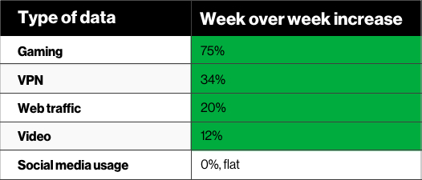

Videojuegos aumentan su uso hasta un 75% debido a la Pandemia de Coronavirus"Más personas se suman a la tendencia de los nuevos pasatiempos"Por: Cristóbal Henríquez 25/May/2020 Categoría: Juegos La ahora declarada Pandemia del nuevo Coronavirus COVID-19, ha obligado a países del mundo entero a tomar estrictas medidas para evitar la propagación del virus que ya afecta a cientos de miles de personas en todo el globo, y que ha cobrado la vida de muchos de ellos. Puede leer: GOG ofrece 27 videojuegos para quedarse en casa por el coronavirus Es por esta razón, que en medio de declaraciones de Estado de Excepción, Toques de Queda y restricciones a la Lomoción de los transeúntes, se han generado ciertas tendencias al aumento en el consumo de Internet, y los videojuegos, los cuales ya tienen sus primeros reportes. La gigante comunicacional Verizon, informó (vía DotEsports) sobre el alza en el uso de contenido digital, entre ellos los videojuegos. Según un gráfico compartido por la compañía, el uso de videojuegos aumentó un 75% solo en lo que respecta al mercado de los Estados Unidos, siguiendo también al tráfico de Internet, y el consumo de videos en línea en plataformas como YouTube o Twitch. 
En dicho país, según confirmó el Washington Post se habría reportado al menos un caso en cada uno de los 50 Estados que lo conforman, lo que ha obligado al gobierno central a adoptar medidas estrictas para evitar su propagación. Fuente: Tarreo |